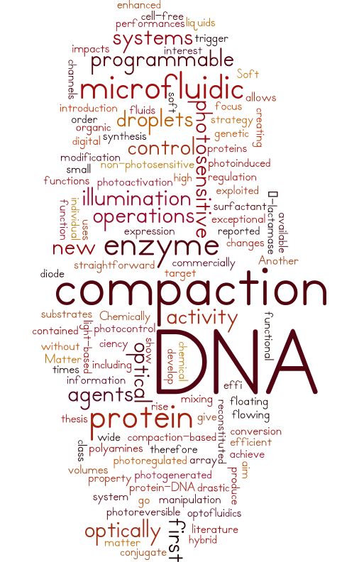

About my research
Chemically and optically programmable Soft Matter :
DNA compaction, protein activity and microfluidic operationsAward: L’Oréal-UNESCO Women in Science Scholarships (2013)
--------
TL-DR: I designed and synthesized molecules that were sensitive to light. Adding these molecules to various systems (chemical reactions, DNA, proteins, small quantities of liquids...) allowed me to control the physical properties of these systems through the application of light.
--------
The aim of the thesis is to develop optically programmable soft matter systems (DNA, proteins, small volumes of fluids) in order to achieve new and drastic property changes upon illumination.
We first focus on photosensitive polyamines, a new class of compaction agents, and on their exceptional performances including photoreversible control of DNA compaction at a high efficiency (up to 100 times more efficient than agents reported in literature).
The photocontrol of DNA compaction is then exploited as a light-based trigger for protein functions. The activity of an enzyme of interest, β-lactamase, is first enhanced by creating a hybrid protein-DNA conjugate. We go on to show how the regulation of DNA compaction impacts the protein function. Another DNA compaction-based strategy uses the genetic information contained in the DNA and a commercially available, cell-free, reconstituted expression system to produce a functional enzyme under optical control. The conversion of non-photosensitive substrates is therefore photoregulated without any chemical modification of the target enzyme.
The introduction a photosensitive surfactant in microfluidic systems allows a straightforward illumination (diode) to give rise to a wide array of operations, from the optical manipulation of individual floating droplets (digital optofluidics for organic synthesis) to the photoactivation of flowing liquids in microfluidic channels (photogenerated droplets, photoinduced mixing).

{kind=link}
{kind=link}
{kind=link}
{kind=link}
{kind=link}
{kind=link}
{kind=link}